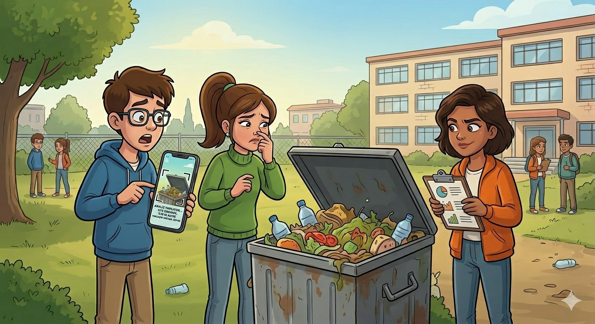

Mayıs güneşinin altında, okulun arka bahçesindeki o tanıdık ama rahatsız edici koku her zamankinden daha keskindi. Mert, elindeki telefonunu cebine koyup, alnındaki teri sildi. Gözlükleri burnundan aşağı kaymıştı, bu yeni veriler onu heyecanlandırmıştı.
Mert telefonu Elif'e uzattı. Ekranda, konteynerin içeriğinin bir grafiği görünüyordu: %75 Organik, %15 Plastik, %10 Kağıt. Altında ise kırmızı harflerle bir uyarı yazısı: "TAHMİNİ MİKTAR: 120 KG."
Elif, telefon ekranına baktıktan sonra konteynerden taşan yarım kalmış bir sandviçe ve henüz açılmamış bir ayran kutusuna baktı. İç çekti.
Zeynep, okulun giriş kapısındaki kalabalığı işaret etti.